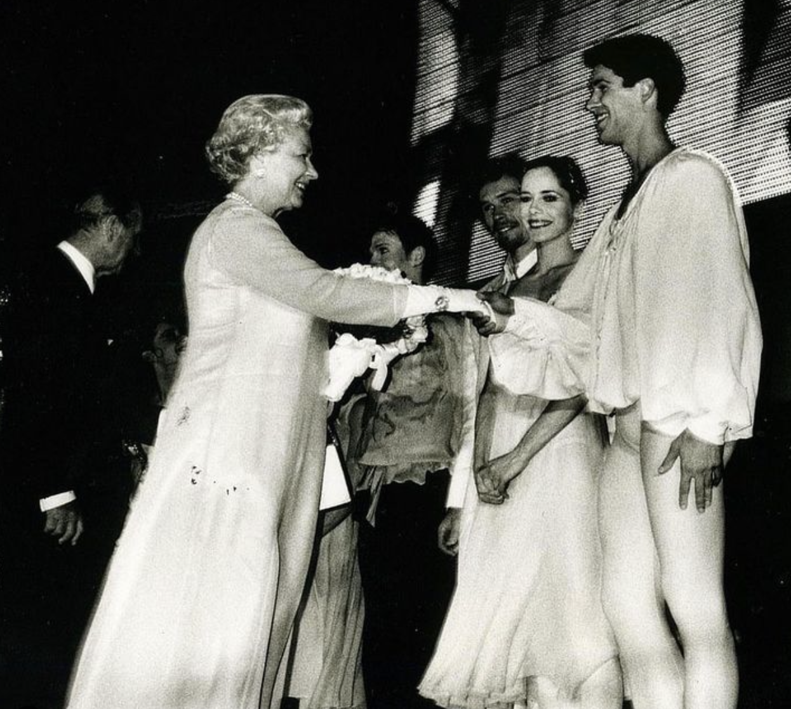

Biografia

Nato a Casale Monferrato il 26 marzo 1975, ha vissuto la giovinezza a Trino.
Ha dichiarato che il suo "luogo del cuore" è la chiesa di San Michele in Insula, la chiesa più antica di Trino.
All'età di dodici anni entra alla scuola di ballo dell'Accademia Teatro alla Scala.
Nel 1990 viene notato da Rudolf Nureyev, che lo sceglie per interpretare il ruolo di Tadzio nell'opera Morte a Venezia, ma il Teatro gli vieta di accettare l'offerta, perché troppo giovane.
Al termine di una rappresentazione di Romeo e Giulietta nel 1996, viene nominato primo ballerino e i suoi impegni da protagonista, sia in balletti classici sia moderni, si moltiplicano: interpreta molti ruoli per diversi coreografi, collaborando per La bella addormentata, Cenerentola, Don Chisciotte e Il lago dei cigni.
All'estero ha occasione di danzare con il Royal Ballet di Londra, il Balletto nazionale canadese, il Balletto di Stoccarda, lo Staatsoper di Berlino, il Teatro dell'opera di Vienna, il Teatro dell'opera di Monaco di Baviera, il Wiesbaden Festival, il Tokyo Ballet.
Tra le ballerine classiche contemporanee italiane, ha danzato con Carla Fracci, Alessandra Ferri, Ambra Vallo ed Eleonora Abbagnato.
Roberto Bolle ha danzato nel Lago dei cigni e in Romeo e Giulietta alla Royal Albert Hall di Londra per l'English National Ballet, diretto da Derek Deane e nel 2000 nell'Ave Verum, su musica di Mozart presso l'Opera di Vienna e nella messa in scena dell'Aida alle piramidi di Giza per il 10º anniversario dell'opera del Cairo, cui segue la rappresentazione presso l'Arena di Verona, trasmessa in mondovisione.
Nel 1999 diventa "Ambasciatore di buona volontà" per l'UNICEF, per la quale partecipa a un viaggio effettuato nel 2006 nel sud del Sudan e a uno nel novembre del 2010 nella Repubblica Centrafricana.
Sempre nel 1999 riceve il Premio Gino Tani per il suo contributo alla diffusione dei valori della danza e del movimento e nel 2000 è premiato con il "Pentagramma d'oro" del Premio Galileo 2000.
Nello stesso anno 2000 inaugura la stagione del Covent Garden con Il lago dei cigni e danza al Teatro Bol'šoj di Mosca per celebrare il 75º anniversario di Maja Plissetskaja, alla presenza del presidente Vladimir Putin.

Nel 2002 danza a Buckingham Palace per la regina d'Inghilterra Elisabetta II.
Nell'ottobre 2002 è protagonista del Romeo e Giulietta di Kenneth MacMillan al teatro Bolshoi di Mosca.
Nel marzo 2003 interpreta al Covent Garden di Londra La bella addormentata e in luglio, in occasione dei festeggiamenti per il terzo centenario di San Pietroburgo, danza Il lago dei cigni TV al teatro Mariinskij.
Nello stesso anno gli viene riconosciuto il titolo di étoile del Teatro alla Scala.
Il 1º aprile 2004, in occasione della Giornata mondiale della gioventù, danza sul sagrato di piazza San Pietro (Vaticano) al cospetto di papa Giovanni Paolo II.
Nel 2005 danza al Teatro alla Scala di Milano, nel ruolo di protagonista del balletto Il lago dei cigni con Svetlana Jur'evna Zacharova.
Il 10 febbraio del 2006 danza alla cerimonia di apertura dei XX Giochi olimpici invernali di Torino, nel segmento Dal futurismo al futuro su una coreografia ideata da Enzo Cosimi.
Roberto Bolle ha collaborato in parecchi spettacoli con il direttore d'orchestra David Garforth.
Dal 2007 collabora con il FAI e nel marzo 2009 è stato nominato "Young Global Leader" dal World Economic Forum di Davos.
Nel giugno 2007 danza al Metropolitan di New York con Alessandra Ferri per il suo addio alle scene.
Nel 2009 è stato nominato "principal" dell'American Ballet Theatre dove ha lavorato anche per la stagione del 2010.
Nel 2008 ha tenuto il suo galà Roberto Bolle and friends sul sagrato del duomo di Milano e in Piazza del Plebiscito a Napoli. Con la collaborazione del FAI ha inoltre realizzato spettacoli al Colosseo di Roma e nella Valle dei Templi di Agrigento, nello spazio antistante il tempio della Concordia. Il tour estivo del galà si è ripetuto negli anni successivi (2009-2011) presso il giardino di Boboli a Firenze, il teatro antico di Taormina, il castello di Fénis (Valle d'Aosta), piazza della Pilotta a Parma, Piazza San Marco a Venezia, il Gran teatro all'aperto di Torre del Lago Puccini, le terme di Caracalla a Roma.
Il 1º gennaio 2013 Roberto Bolle accompagnato dal Corpo di Ballo del Teatro alla Scala di Milano è interprete della creazione del coreografo italo-africano Mvula Sungani nel Concerto di Capodanno dal Gran Teatro La Fenice di Venezia trasmesso in mondovisione da Rai 1 e Arte.
Nel 2016 è il protagonista su Rai 1 del suo spettacolo televisivo Roberto Bolle - La mia danza libera, presentato da Luisa Ranieri e Francesco Pannofino e andato in onda l'8 ottobre. Tra gli ospiti della serata figurano Carla Fracci, Virginia Raffaele, Jovanotti, Paola Cortellesi e Nicoletta Manni.
Nel 2017 Bolle ha girato l'Italia con il suo galà Roberto Bolle and friends.
Il 26 e 27 maggio 2017, per i 100 anni di Acqua di Parma, ha portato in scena a Parma due rappresentazioni del suo galà.